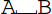
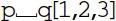

| Bind | Reference Home |
Bind is an uninstantiated function that is used to indicate intermediate complexes formed during a reaction, e.g.,
A + X ↔ Bind[A,E] ↔ B + Efor an enzymatic reaction. When Bind[A,B] is generated by interpret, the arguments will be alphabetized, i.e., Bind[B,A] will be converted to Bind[A,B]. If Bind[B,A] is sent to interpret, the order of the arguments will not be changed. The user should ensure that Bind[A,B] and Bind[B,A] are treated equivalently.
In general, it is not necessary to redefine Bind unless a specific format is required - in the above reaction, the intermediate species will be referred to as Bind[A,En][t], which is a perfectly valid species name in xCellerator.
The user should redefine Bind[..] if a specific format is desired for automatically generated complexes.
The following function will generate a complex name such as 
mybind[A_, B_]:= Module[{names,name},
names=Sort[{A,B}];
name = ToString[names[[1]]]<>
"\[UnderBracket]"<>
ToString[names[[2]]];
Return[Symbol[name]];
]
If indices are used, the following function should be defined first:
mybind[A_[i__], B_[j__]]:= mybind[A,B][i,j];
mybind[p[1,2],q[3]] will return 
The user would then do the following to change the variable names to their preferred format:
interpret[...]/.{Bind->mybind}